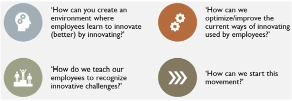
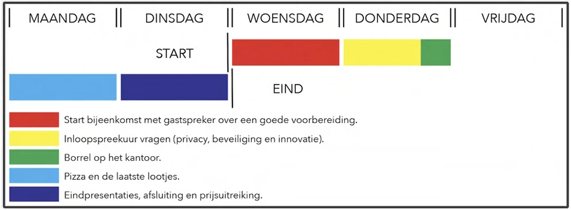
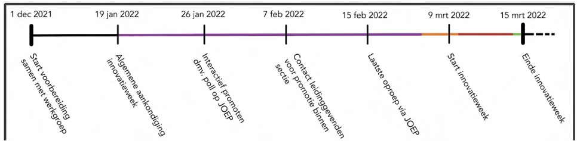
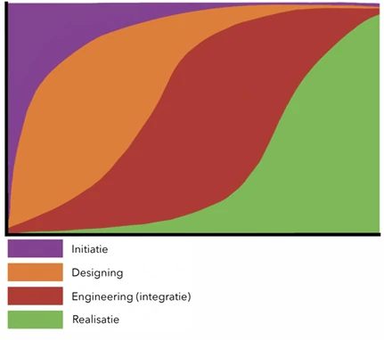
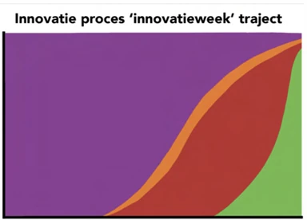
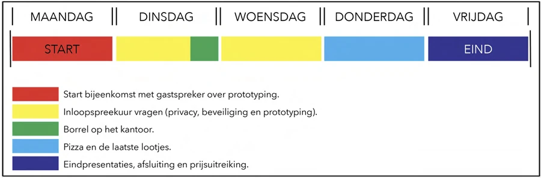
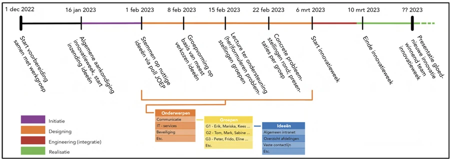
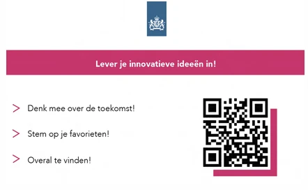
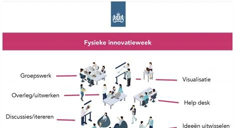
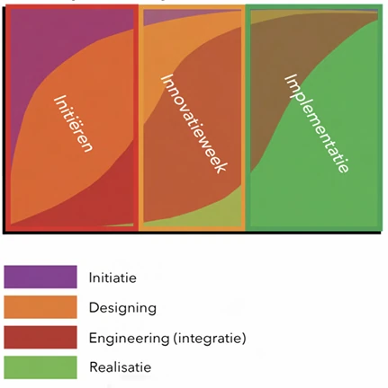

07 / Organisational design
Redesigning Innovation
A team project with Justid to strengthen the Ministry of Justice and Security’s capacity to innovate by redesigning its annual innovation week.
Applying design to a systemic problem
This course showed me that design can address more than products and services. We worked on an organisational challenge at the Justitiële Informatiedienst, or Justid, part of the Dutch Ministry of Justice and Security. Justid manages and secures data across the ministry, and the project asked how design methods could help improve the organisation’s capacity to innovate.
Justid organised an innovation week once a year, but the team saw few proposals for experiments. Our analysis pointed to limited shared knowledge about innovation processes and low employee motivation. We reframed the task around how to help staff generate ideas, recognise innovation opportunities and feel able to experiment.

A week with strong moments and weak preparation
The existing programme already included useful elements: a guest speaker and a break during the week. However, it concentrated much of the preparation into a short period and offered little ongoing support. Combined with gaps in knowledge and motivation, this left employees with few experiment proposals to develop.
The schedule and timeline below show how the innovation week was organised and how preparation, promotion and the event itself were spread out. This made it easier to see where employees needed clearer guidance and more time to shape ideas.


The IDE(R) model as a shared reference
We used the IDE(R) model as a boundary object: a shared way for people with different roles to discuss the innovation process. It describes four connected activities: Initiation scopes the situation; Design defines and iterates on the problem; Engineering develops a viable solution; and Realisation creates and implements the innovation.
The stages are not a fixed sequence with a finish line. Innovation is iterative, so all four can be present at the same time and influence one another. The model gives employees a common language for discussing where an idea is and what kind of support it needs.


Prepare earlier and support the whole week
Our proposal makes the process more balanced by starting Initiation before the event, then providing time, tools and guidance during the innovation week to strengthen Design and Engineering. The week still has clear moments for a guest speaker, questions, informal exchange and presentations, but employees receive more support while developing their ideas.
A longer timeline begins with a working group and an early announcement, then moves through collecting and selecting ideas, forming groups and preparing challenges. After the event, the ideas can be presented and developed further for implementation. The schedule is a recommendation based on the project analysis, rather than a report of a change already put into practice.


Make participation easier
To help employees join in, we designed supporting materials for before and during the innovation week. A QR invitation can be shared during Initiation so colleagues can contribute ideas, vote for proposals and find information. During the event, a visual guide points people towards group work, discussion and iteration, visualisation, a help desk and ways to exchange ideas.
The materials turn the proposed process into clear actions and make it easier for employees to take part without needing prior expertise in innovation methods.


From early exploration to implementation
The final model places the innovation week inside a broader process with three visible phases: Initiation, the innovation week itself, and Implementation. Initiation begins before the event; the week gives ideas time and support to develop through Design and Engineering; and follow-up helps turn stronger ideas into innovations that can be implemented afterwards.
Our consultation focused on transferring this process knowledge so Justid could use the IDE(R) model to improve future innovation weeks. The outcome is a model, schedule and set of supporting materials intended to address the gaps in knowledge and motivation identified in the analysis.
